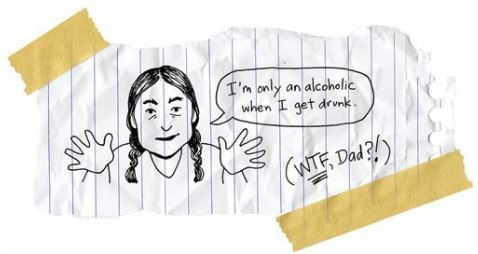
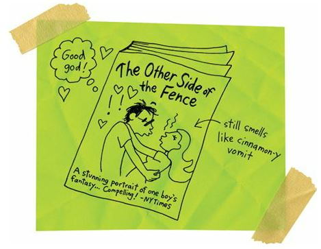
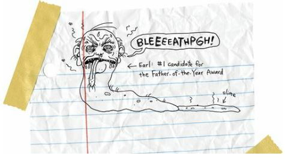
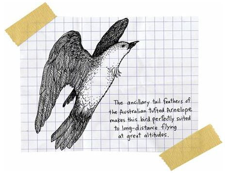
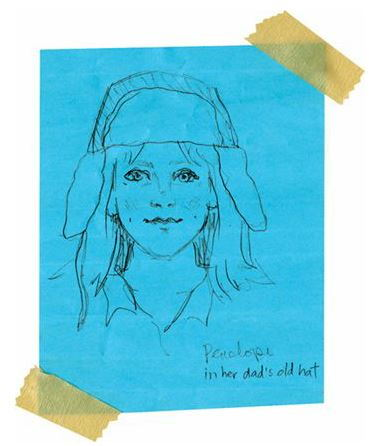

Hunger Pains
Our history teacher, Mr. Sheridan, was trying to teach us something about the Civil War. But he was so boring and monotonous that he was only teaching us how to sleep with our eyes open.
I had to get out of there, so I raised my hand.
“What is it, Arnold?” the teacher asked.
“I have to go the bathroom.”
“Hold it.”
“I can’t.”
I put on my best If-I-Don’t-Go-Now-I’m-Going-To-Explode face.
“Do you really have to?” the teacher asked.
I didn’t have to go at first, but then I realized that yes, I did have to go.
“I have to go really bad,” I said.
“All right, all right, go, go.”
I headed over to the library bathrooms because they’re usually a lot cleaner than the ones by the lunchroom.
So, okay, I’m going number two, and I’m sitting on the toilet, and I’m concentrating. I’m in my Zen mode, trying to make this whole thing a spiritual experience. I read once that Gandhi was way into his own number two. I don’t know if he told fortunes or anything. But I guess he thought the condition and quality of his number two revealed the condition and quality of his life.
Yeah, I know, I probably read too many books.
And probably WAY too many books about number two.
But it’s all important, okay? So I finish, flush, wash my hands, and then stare in the mirror and start popping zits. I’m all quiet and concentrating when I hear this weird noise coming from the other side of the wall.
That’s the girls’ bathroom.
And I hear that weird noise again.
Do you want to know what it sounds like?
It sounds like this:
ARGGHHHHHHHHSSSSSPPPPPPGGGHHHHHHHAAAAAARGHHHHHHHHHHAGGGGHH!
It sounds like somebody is vomiting.
Nope.
It sounds like a 747 is landing on a runway of vomit.
I’m planning on heading back to the classroom for more scintillating lessons from the history teacher. But then I hear that noise again.
ARGGGHHHHHHHHSGHHSLLLSKSSSHHSDKFDJSABCDEFGHIJKLMNOPQRSTUVWXYZ!
Okay, so somebody might have the flu or something. Maybe they’re having, like, kidney failure in there. I can’t walk away.
So I knock on the door. The girls’ bathroom door.
“Hey,” I say. “Are you okay in there?”
“Go away!”
It’s a girl, which makes sense, since it is the girls’ bathroom.
“Do you want me to get a teacher or something?” I ask through the bathroom door.
“I said, GO AWAY!”
I’m not dumb. I can pick up on subtle clues.
So I walk away, but something pulls me back. I don’t know what it is. If you’re romantic, you might think it was destiny.
So destiny and me lean against the wall and wait.
The vomiter will eventually have to come out of the bathroom, and then I’ll know that she’s okay.
And pretty soon, she does come out.
And it is the lovely Penelope, and she’s chomping hard on cinnamon gum. She’d obviously tried to cover the smell of vomit with the biggest piece of cinnamon gum in the world. But it doesn’t work. She just smells like somebody vomited on a big old cinnamon tree.
“What are you looking at?” she asks me.
“I’m looking at an anorexic,” I say.
A really HOT anorexic, I want to add, but I don’t.
“I’m not anorexic,” she says. “I’m bulimic.”
She says it with her nose and chin in the air. She gets all arrogant. And then I remember there are a bunch of anorexics who are PROUD to be skinny and starved freaks.
They think being anorexic makes them special, makes them better than everybody else. They have their own fricking Web sites where they give advice on the best laxatives and stuff.
“What’s the difference between bulimics and anorexics?” I ask.
“Anorexics are anorexics all the time,” she says. “I’m only bulimic when I’m throwing up.”
Wow.
SHE SOUNDS JUST LIKE MY DAD!

There are all kinds of addicts, I guess. We all have pain. And we all look for ways to make the pain go away.
Penelope gorges on her pain and then throws it up and flushes it away. My dad drinks his pain away.
So I say to Penelope what I always say to Dad when he’s drunk and depressed and ready to give up on the world.
“Hey, Penelope,” I say. “Don’t give up.”
Okay, so it’s not the wisest advice in the world. It’s actually kind of obvious and corny.
But Penelope starts crying, talking about how lonely she is, and how everybody thinks her life is perfect because she’s pretty and smart and popular, but that she’s scared all the time, but nobody will let her be scared because she’s pretty and smart and popular.
You notice that she mentioned her beauty, intelligence, and popularity twice in one sentence?
The girl has an ego.
But that’s sexy, too.

How is it that a bulimic girl with vomit on her breath can suddenly be so sexy? Love and lust can make you go crazy.
I suddenly understand how my big sister, Mary, could have met a guy and married him five minutes later. I’m not so mad at her for leaving us and moving to Montana.
Over the next few weeks, Penelope and I become the hot item at Reardan High School. Well, okay, we’re not exactly a romantic couple. We’re more like friends with potential. But that’s still cool.
Everybody is absolutely shocked that Penelope chose me to be her new friend. I’m not some ugly, mutated beast. But I am an absolute stranger at the school.
And I am an Indian.
And Penelope’s father, Earl, is a racist.
The first time I meet him, he said, “Kid, you better keep your hands out of my daughter’s panties. She’s only dating you because she knows it will piss me off. So I ain’t going to get pissed. And if I ain’t pissed then she’ll stop dating you. In the meantime, you just keep your trouser snake in your trousers and I won’t have to punch you in the stomach.”
And then you know what he said to me after that?

“Kid, if you get my daughter pregnant, if you make some charcoal babies, I’m going to disown her. I’m going to kick her out of my house and you’ll have to bring her home to your mommy and daddy. You hearing me straight, kid? This is all on you now.”
Yep, Earl was a real winner.
Okay, so Penelope and I became the hot topic because we were defying the great and powerful Earl.
And, yeah, you’re probably thinking that Penelope was dating me ONLY because I was the worst possible choice for her.
She was probably dating me ONLY because I was an Indian boy.
And, okay, so she was only semi-dating me. We held hands once in a while and we kissed once or twice, but that was it.
I don’t know what I meant to her.
I think she was bored of being the prettiest, smartest, and most popular girl in the world. She wanted to get a little crazy, you know? She wanted to get a little smudged.
And I was the smudge.
But, hey, I was kind of using her, too.
After all, I suddenly became popular.
Because Penelope had publicly declared that I was cute enough to ALMOST date, all of the other girls in school decided that I was cute, too.
Because I got to hold hands with Penelope, and kiss her good-bye when she jumped on the school bus to go home, all of the other boys in school decided that I was a major stud.
Even the teachers started paying more attention to me.
I was mysterious.
How did I, the dorky Indian guy, win a tiny piece of Penelope’s heart?
What was my secret?
I looked and talked and dreamed and walked differently than everybody else.
I was new.
If you want to get all biological, then you’d have to say that I was an exciting addition to the Reardan gene pool.
So, okay, those are all the obvious reasons why Penelope and I were friends. All the shallow reasons. But what about the bigger and better reasons?
“Arnold,” she said one day after school, “I hate this little town. It’s so small, too small. Everything about it is small. The people here have small ideas. Small dreams. They all want to marry each other and live here forever.”
“What do you want to do?” I asked.
“I want to leave as soon as I can. I think I was born with a suitcase.”
Yeah, she talked like that. All big and goofy and dramatic. I wanted to make fun of her, but she was so earnest.
“Where do you want to go?” I asked.
“Everywhere. I want to walk on the Great Wall of China. I want to walk to the top of pyramids in Egypt. I want to swim in every ocean. I want to climb Mount Everest. I want to go on an African safari. I want to ride a dogsled in Antarctica. I want all of it. Every single piece of everything.”
Her eyes got this strange faraway look, like she’d been hypnotized.
I laughed.
“Don’t laugh at me,” she said.
“I’m not laughing at you,” I said. “I’m laughing at your eyes.”
“That’s the whole problem,” she said. “Nobody takes me seriously.”
“Well, come on, it’s kind of hard to take you seriously when you’re talking about the Great Wall of China and Egypt and stuff. Those are just big goofy dreams. They’re not real.”
“They’re real to me,” she said.
“Why don’t you quit talking in dreams and tell me what you really want to do with your life,” I said. “Make it simple.”
“I want to go to Stanford and study architecture.”
“Wow, that’s cool,” I said. “But why architecture?”
“Because I want to build something beautiful. Because I want to be remembered.”
And I couldn’t make fun of her for that dream. It was my dream, too. And Indian boys weren’t supposed to dream like that. And white girls from small towns weren’t supposed to dream big, either.
We were supposed to be happy with our limitations. But there was no way Penelope and I were going to sit still. Nope, we both wanted to fly:

“You know,” I said. “I think it’s way cool that you want to travel the world. But you won’t even make it halfway if you don’t eat enough.”
She was in pain and I loved her, sort of loved her, I guess, so I kind of had to love her pain, too.
Mostly I loved to look at her. I guess that’s what boys do, right? And men. We look at girls and women. We stare at them. And this is what I saw when I stared at Penelope:

Was it wrong to stare so much? Was it romantic at all? I don’t know. But I couldn’t help myself.
Maybe I don’t know anything about romance, but I know a little bit about beauty.
And, man, Penelope was crazy beautiful.
Can you blame me for staring at her all day long?